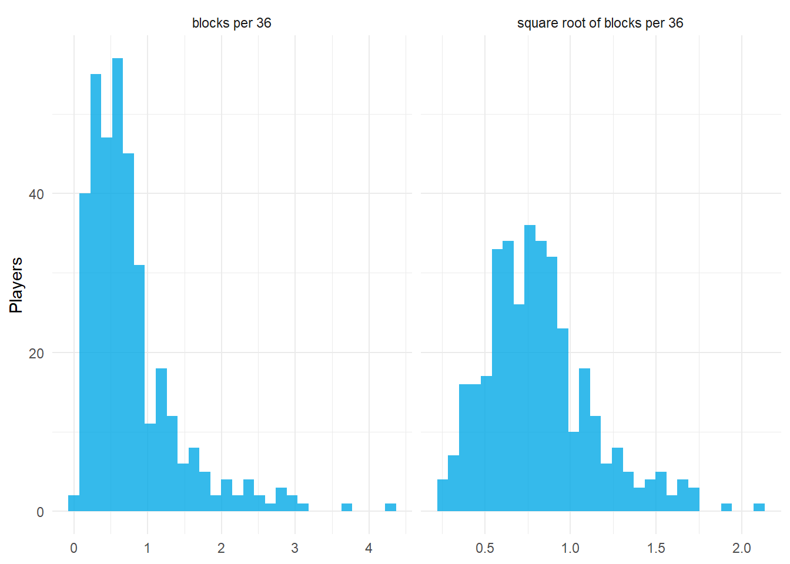

6.1 Unsupervised Learning: Goals, Features, and Distances
Author
Hua Gong
1 Learning objectives
After this tutorial, you should be able to:
distinguish unsupervised from supervised learning and state what a clustering can and cannot claim;
separate the two purposes of clustering players, archetypes and comparables, and explain why they call for different methods;
construct a dissimilarity deliberately through representation, transformation, standardization, weighting, and aggregation;
compute and compare Euclidean, Manhattan, correlation, Mahalanobis, and Gower distances; and
use principal components to inspect and reduce a feature matrix before clustering.
2 Learning without a target
Lectures 2 through 5 were supervised: every model had an outcome, and a held-out outcome told us whether the model was any good. Clustering has no outcome. We choose what “similar” means, an algorithm groups similar observations, and the only judge of the result is whether it is stable, interpretable, and useful for the question that motivated it.
That changes what a clustering can claim. “These players form five groups” is a statement about our distance, our features, and our algorithm as much as about the players. Three consequences follow.
The features and the distance are modeling decisions and should be designed for the question, not left at software defaults.
The number of clusters is not a fact to be discovered; it is a resolution to be chosen, and different resolutions answer different questions.
Validation means checking that the structure is real (not an artifact of the algorithm) and stable (not an artifact of the sample), which is the subject of Tutorial 6.6.
3 Two purposes: archetypes and comparables
Akhanli and Hennig (2023) distinguish two uses of player clustering that need different tools.
Purpose
Number of clusters
Cluster size
Typical use
What matters
Archetypes
few (4 to 8)
large
describing roster construction, lineup balance, how the game is played
well-separated, interpretable groups
Comparables
many (20 to 50)
small
scouting, contract valuation, projecting a player from similar players
tight within-cluster similarity
A method tuned for archetypes will produce coarse groups that lump distinct roles together; a method tuned for comparables will split a real archetype into many pieces. Decide which you want before running anything.
Every player played at least 500 minutes in 2023-24. The listed position is kept as an external reference for later tutorials and is never used as an input.
Akhanli and Hennig describe a dissimilarity as the result of five explicit steps. Each one changes the clustering.
5.1 1. Representation
Totals confound role with playing time: a starter and a backup with identical per-minute production have very different season totals. Per-36-minute rates remove playing time. Shares such as three-point attempts divided by all attempts remove volume as well, leaving shot selection. Which representation is right depends on the question: for archetypes of play style, rates and shares; for a player’s total contribution, totals.
A difference of one block per 36 minutes means something different near zero than it does at three. Skewed variables let a few extreme players dominate distances.
bind_rows(data.frame(value = profiles$blk_36, scale ="blocks per 36"),data.frame(value =sqrt(profiles$blk_36), scale ="square root of blocks per 36")) %>%ggplot(aes(value)) +geom_histogram(bins =30, fill ="#03a9e6", alpha =0.8) +facet_wrap(~scale, scales ="free_x") +labs(x =NULL, y ="Players") +theme_minimal()

Blocks per 36 minutes before and after a square-root transformation.
The transformation is a statement about which differences matter. Under the square root, the gap between 0 and 1 block counts more than the gap between 3 and 4, which is usually the intent.
5.3 3. Standardization
Points per 36 minutes ranges over about 30 units; effective field-goal percentage ranges over about 0.3. Without rescaling, the points variable alone would decide the distance. The usual fix is the z-score,
which gives every variable unit variance. Alternatives are range scaling, , and robust scaling by the median and median absolute deviation, which resists outliers.
X <-profile_matrix(profiles)round(apply(X, 2, sd)[1:6], 3)
Standardization makes every variable count equally, which is itself a choice. If the question is about offensive role, shot selection variables deserve more weight than steals. A weighted Euclidean distance is
and multiplying column by before an unweighted algorithm has the same effect. Weights also handle redundancy: including points, field-goal attempts, and free-throw attempts triple-counts scoring volume unless their weights are reduced.
5.5 5. Aggregation
The Minkowski family combines per-variable differences,
with (Euclidean) and (Manhattan) the common cases. Euclidean distance emphasizes large differences on single variables; Manhattan distance treats a difference of 2 on one variable the same as differences of 1 on two variables.
6 Distances that measure different things
6.1 Correlation distance
Two players with the same pattern of strengths but different overall levels are close under the correlation distance
where is the Pearson correlation between their standardized feature vectors. A high-usage scorer and a low-usage scorer with the same shape of profile are neighbors here and far apart under Euclidean distance.
6.2 Mahalanobis distance
Correlated features double-count. Points, field-goal attempts, and free-throw attempts move together, so Euclidean distance on all three is roughly three times the distance on one. The Mahalanobis distance
divides by the covariance matrix , which removes the double-counting. It is Euclidean distance after decorrelating the features, and it is the natural distance inside a Gaussian mixture model (Tutorial 6.4).
6.3 Gower distance for mixed data
When some variables are categorical, such as handedness or position, Gower’s coefficient averages per-variable dissimilarities that are each scaled to : absolute differences divided by the range for numeric variables and a 0/1 mismatch for categorical ones. cluster::daisy() computes it; Tutorial 6.5 uses it.
NoteSimple example: Gower distance with numbers and categories
Suppose we compare three hypothetical players using height, weight, and shooting hand. These features are only for this small example; they do not change the inputs to the NBA analysis below.
Player
Height (cm)
Weight (kg)
Shooting hand
A
190
80
Right
B
200
90
Right
C
210
100
Left
Step 1: Put each numeric difference on a common scale. Use the range across the entire comparison dataset, not just the pair being compared:
For players A and B, divide each absolute difference by its feature’s range:
Why divide by the range? It makes the differences unitless, so centimeters and kilograms can contribute on the same scale.
Step 2: Score the categorical difference. A category match contributes and a mismatch contributes . Both players shoot right-handed, so
Step 3: Average the contributions. With equal feature weights and no missing values,
The other pairs work the same way:
Pair
Height contribution
Weight contribution
Hand contribution
Gower distance
A–B
0.5
0.5
0
0.333
A–C
1.0
1.0
1
1.000
B–C
0.5
0.5
1
0.667
Interpretation: A and B are the most similar pair under these features and weights. B and C have the same numeric gaps as A and B, but their different shooting hands increase their distance. A distance of means a match on all included features; means maximum dissimilarity on every feature under this scaling. The distance is not a probability.
Here is the same calculation in R. Store shooting hand as a factor so daisy() treats it as categorical, and keep player identifiers out of the feature columns.
The choices still matter: equal weights give shooting hand as much total weight as either numeric feature. Adding an extreme player changes the numeric ranges and therefore the distances. Choose features and weights to match the comparison you want to make.
The lists overlap but are not the same. The neighbors are a property of the distance, and the distance should be chosen to match what “comparable” means for the question.
ImportantDefaults are not decisions
dist() returns Euclidean distance on whatever columns it is given. That is a default, not a recommendation. Every step above, from per-minute rates to the choice of , changes which players are neighbors.
7 The curse of dimensionality
In high dimensions, distances lose contrast: the nearest and farthest points from any observation become nearly equally far. The following simulation draws points uniformly in a cube and records the ratio of the farthest to the nearest neighbor of one point.
With 14 features the problem is mild but present. Redundant features make it worse without adding information, which is one argument for weighting, for Mahalanobis distance, and for dimension reduction.
8 Principal components
Principal component analysis (PCA) finds the directions of largest variance in the standardized feature matrix. With the standardized matrix and its correlation matrix, the eigendecomposition gives loadings and variances . The scores are uncorrelated new variables, and the share of variance carried by the first components is .
The first component contrasts interior play (rebounds, blocks, free-throw rate) with perimeter play (three-point rate, assists). The second component is scoring volume. Together they describe a large share of the variation among players.
Players on the first two principal components, colored by listed position group. Positions are shown for orientation only; they were not used in the analysis.
Two things stand out. Position groups occupy different regions but overlap heavily, so any clustering will disagree with the labels for many players. And there are no empty gaps between groups: the players form a continuum with denser and sparser regions, not islands. Clustering will impose boundaries on that continuum, which is why validation matters.
8.1 PCA as preprocessing
Clustering on the first few components has three effects: it removes noise in the small components, it decorrelates the features (so Euclidean distance on scores is Mahalanobis-like on the original variables when all components are kept), and it makes the result plottable. It also has a cost: PCA maximizes variance, not cluster separation, and a direction that separates two rare roles can be discarded as low-variance. Keeping enough components to explain about 80 to 90% of variance is a common compromise, and Tutorial 6.6 checks whether the clusters change.
9 Practice
Why do per-36 rates rather than totals suit a study of play style, and when would totals be preferable?
Two players have profiles and on three standardized variables. Compute their Euclidean, Manhattan, and correlation distances.
Explain why Mahalanobis distance can be preferable to Euclidean when several features measure scoring volume.
What is lost when clustering is done on the first two principal components only?
TipShow answers
Rates remove playing time, which is a role decision made by the coach rather than a characteristic of the player’s style; totals are preferable when the question concerns total contribution or availability.
Euclidean ; Manhattan ; the vectors have correlation so the correlation distance is .
Correlated features count the same information several times in a Euclidean distance; the covariance inverse removes that redundancy so each independent dimension of variation counts once.
Directions of small variance that may nonetheless separate real groups, and any structure orthogonal to the two retained components.
10 Key takeaways
Clustering has no outcome to check against; the features and distance are modeling decisions that define the answer.
Decide first whether the goal is a few archetypes or many comparables.
Build a dissimilarity in five deliberate steps: representation, transformation, standardization, weighting, and aggregation.
Euclidean, Manhattan, correlation, Mahalanobis, and Gower distances answer different questions and produce different neighbors.
Principal components reveal that players form a continuum; clustering draws boundaries on it and must be validated.